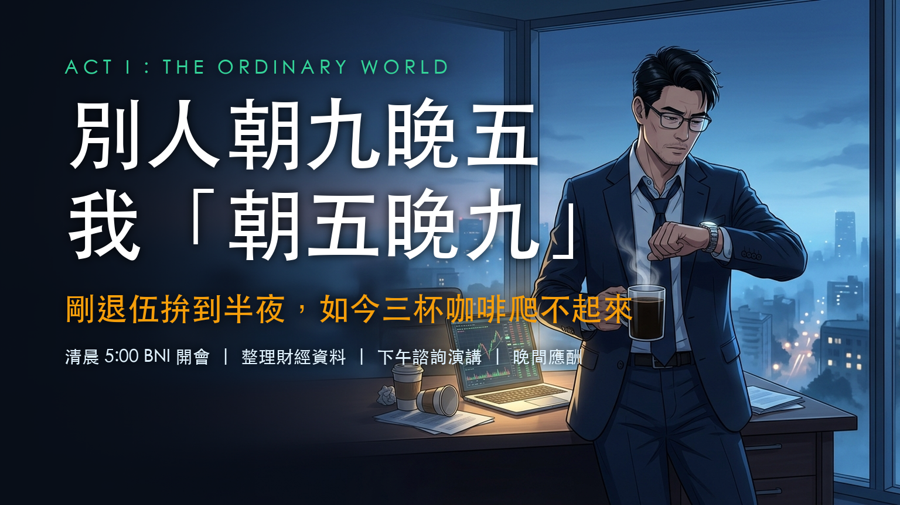
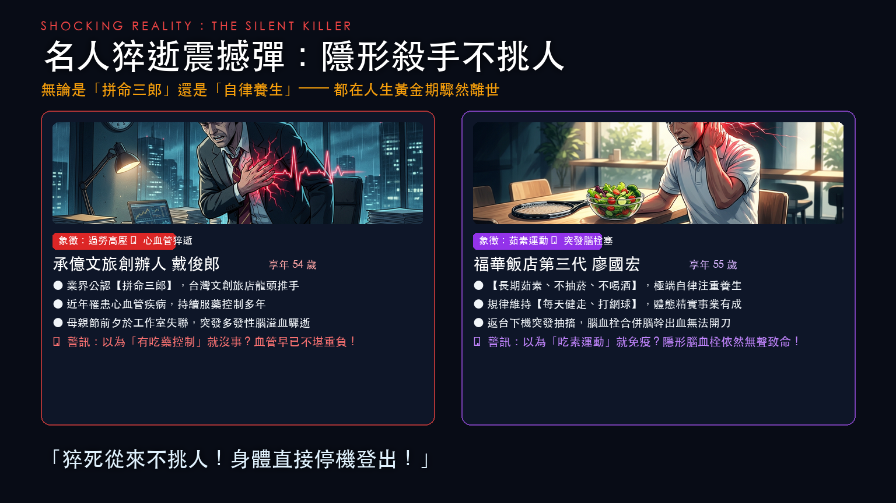
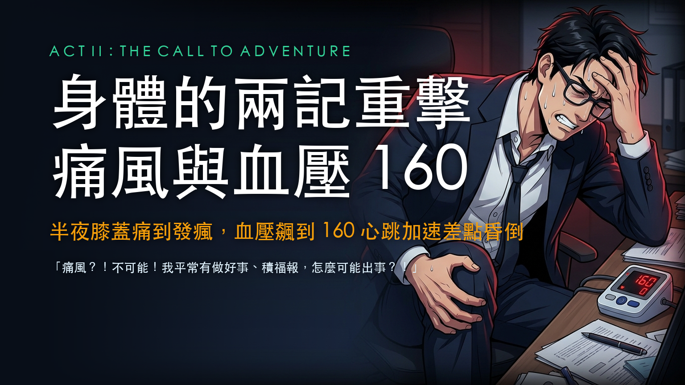
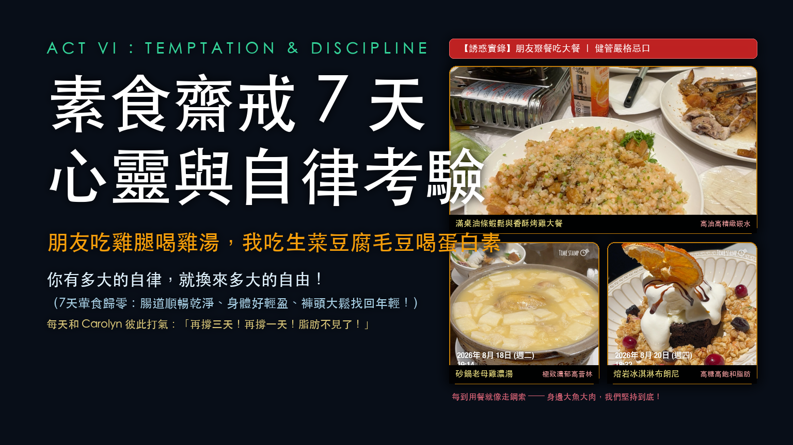
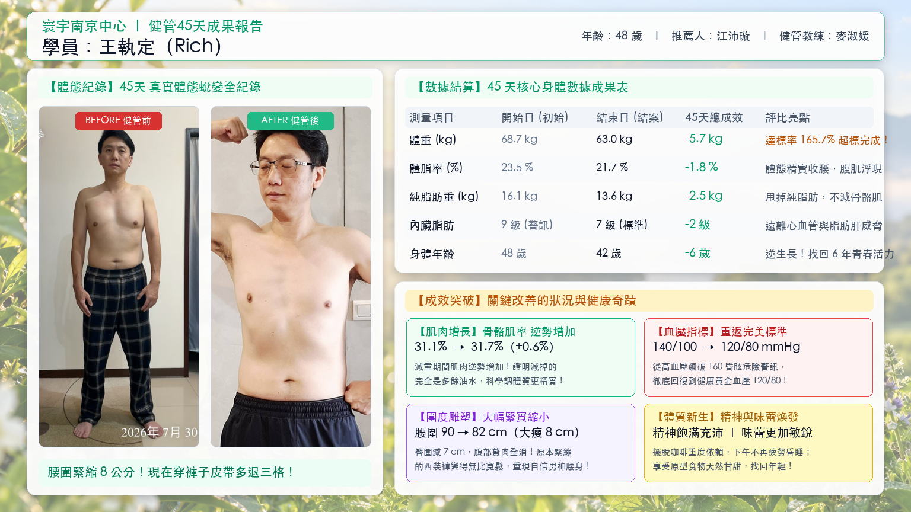
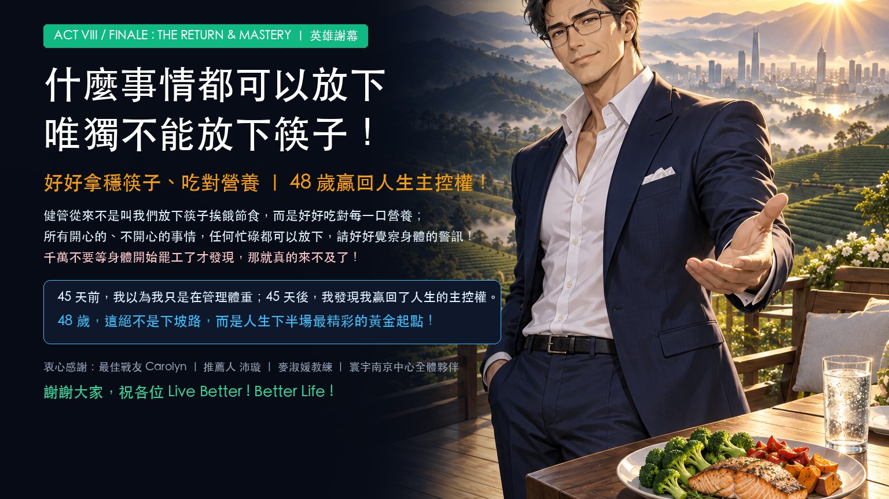

THE HERO'S JOURNEY
45일간의 변화의 여정
48세, 내 몸의 주도권을 되찾다
- 👤 발표자: 왕집정 Rich | 금융계 재테크 강사
- 🔥 45일 최종 성적표: 총 5.7kg 감량 (목표 대비 165.7% 초과 달성!)
- 📏 허리둘레 8cm 감소 | 신체나이 6세 젊어짐 (48세 ➔ 42세)
🎙️ 발표자 한국어 대본 보기
▼
"안녕하세요, Rich입니다. 오늘 여러분과 함께 45일간의 놀라운 신체 변화의 여정을 나누고자 합니다."

ACT I : THE ORDINARY WORLD
남들은 9 to 6,
남들은 9 to 6,
나는 "새벽 5시 to 밤 9시"
제대 직후엔 자정까지 뛰었는데, 이제는 커피 세 잔으로도 못 일어난다
- ⚡ 새벽 5:00: 기상 및 BNI 조찬 모임 (장휘 분회 창립 & 김우 분회 자문)
- 📈 오전~오후: 금융 시장 자료 정리, 고객 상담 및 투자 강연
- 🍷 저녁: 쉼 없는 비즈니스 미팅과 회식의 연속
- 📉 체력의 낭떠러지: 30대엔 커피 한 잔 ➔ 40대엔 세 잔을 마셔도 늦잠
🎙️ 발표자 한국어 대본 보기
▼
"남들은 보통 9 to 6이지만, 제 일상은 '새벽 5시부터 밤 9시까지'였습니다. 다들 BNI 조찬 모임 아시죠? 저는 직접 창립한 장휘 분회와 자문하는 김우 분회, 두 곳을 맡고 있어 매일 새벽 5시에 일어나 자료를 정리하고, 오후엔 상담과 강연, 저녁엔 회식까지 쉼 없이 달렸습니다. 군 제대 직후엔 밤 12시까지 일해도 끄떡없었는데, 30대엔 커피 한 잔, 40대가 되니 커피 세 잔을 마셔도 아침에 몸이 천근만근이었습니다."

SHOCKING REALITY : THE SILENT KILLER
유명인 돌연사 충격:
유명인 돌연사 충격:
보이지 않는 암살자는 사람을 가리지 않는다
'워커홀릭'이든 '철저한 건강 관리자'든 — 인생의 황금기에 찾아온 갑작스러운 비보
💥 "돌연사는 절대 예고하지 않는다! 몸이 순식간에 강제 로그아웃된다!"
-
[워커홀릭형] 대준랑 (향년 54세, 부티크 호텔 체인 창립자)
수년간 혈압약을 먹으며 관리했음에도 과로 속 다발성 뇌출혈로 돌연 별세! -
[철저한 채식·운동형] 요국굉 (향년 55세, 하워드 호텔 3세 경영자)
장기 채식, 금연, 금주, 매일 테니스와 걷기 유지 ➔ 귀국 직후 뇌간 혈전·뇌출혈로 별세!
🎙️ 발표자 한국어 대본 보기
▼
"한 사람은 대만 최대 부티크 호텔 체인 창립자 대준랑, 겨우 54세였습니다. 공인된 워커홀릭에 혈압약을 먹으며 관리했지만 어머니날 전날 돌연 뇌출혈로 세상을 떠났습니다. 또 한 분은 하워드 호텔 3세 요국굉, 55세. 평생 채식하고, 술·담배 전혀 안 하고, 매일 테니스 치며 철저히 건강을 챙겼는데 귀국 직후 뇌간 혈전으로 쓰러져 돌아오지 못했습니다. 돌연사는 절대 예고하지 않습니다! 몸이 순식간에 강제 로그아웃됩니다!"

ACT II : THE CALL TO ADVENTURE
내 몸의 두 가지 강력한 경고:
내 몸의 두 가지 강력한 경고:
통풍과 혈압 160
한밤중 미칠 듯한 통풍 발작, 혈압 160 급상승에 심장 두근거림으로 기절할 뻔하다
-
⚠️ 경고 1: 한밤중 무릎 통풍 발작
미칠 듯한 고통에 눈물 쏙! "통풍이라고?! 내가 평소 착한 일도 많이 하고 복을 쌓았는데 통풍이라니?!" -
⚠️ 경고 2: 무작정 168 간헐적 단식의 역풍
아침 굶고 블랙커피만 마시다 심장 급발진, 혈압 160 급상승으로 응급실행! - 🤦♂️ 여전한 고집: "괜찮아, 물 많이 마시고 헬스장 열심히 가면 돼!"
🎙️ 발표자 한국어 대본 보기
▼
"이런 뉴스를 들으면 건강관리를 시작할까요? 전혀요! '난 건강하고 집안 유전자도 좋고 평소 착한 일도 많이 해서 복을 쌓았으니 나하곤 상관없어!'라고 생각했습니다. 그러던 어느 날 밤, 무릎에 미칠 듯한 통풍 통증이 찾아왔습니다. 절대 인정할 수 없었죠. 그 후 뱃살을 빼겠다고 무작정 아침을 굶고 블랙커피만 마시는 168 간헐적 단식을 하다가, 갑자기 심장이 요동치며 혈압이 160까지 치솟아 기절할 뻔했습니다. 그래도 정신 못 차리고 '물 많이 마시고 헬스장 가면 돼'라고 버텼습니다."
ACT III : CROSSING THE THRESHOLD
관을 봐야 눈물을 흘린다
관을 봐야 눈물을 흘린다
결정타는 바로 '성황야(城隍爺)'!
매년 신년운세는 '운전 조심'이었는데, 올해는 '머리 질환 조심'이라니!
-
🙏 저승을 관장하는 성황야(城隍爺)의 경고:
"올해는 머리 쪽 질환을 각별히 조심하라!" -
😨 신령님의 말없는 고개 흔들림:
"무슨 질환입니까?" 물었더니 엄숙하게 고개를 절레절레... 혼자서 '뇌졸중 와서 머리 터지는 거 아냐?!' 폭풍 상상! -
🚀 빛의 속도로 결단:
당장 배선(沛璇) 선생님께 연락해 건강관리 코치 배정 & 영양제 일괄 구입, 즉시 실행 돌입!
🎙️ 발표자 한국어 대본 보기
▼
"저처럼 고집 센 사람을 두고 보통 뭐라고 하죠? 바로 '관을 봐야 눈물을 흘린다'는 말이죠. 제가 건강관리를 결심하게 된 진짜 결정적 계기가 뭔지 아십니까? 바로 저승을 관장하는 성황야(城隍爺) 신령님 때문이었습니다. 매년 신년 운세를 보러 가면 항상 '운전 조심해라, 일찍 자라' 정도였는데, 올해는 뜻밖에도 '머리 쪽 질환을 각별히 조심하라'는 점괘가 나온 겁니다! 너무 무서워서 '구체적으로 어떤 머리 질환입니까?'라고 여쭸더니, 신령님이 그저 말없이 고개를 절레절레 흔드시는 겁니다! 그 모습을 보고 혼자 미친 듯이 상상했습니다. '저승의 대장이 고개를 흔들다니, 나 진짜 뇌졸중 와서 머리 터지는 거 아냐?!' 그 길로 당장 배선(沛璇) 선생님께 달려가 '선생님, 코치님 빨리 연결해 주시고 영양제 다 결제해 주세요, 지금 당장 시작합니다!'라고 외쳤습니다."
ACT IV : TESTS, ALLIES & ENEMIES
혼자 가면 빨리 가지만,
혼자 가면 빨리 가지만,
함께 가면 멀리 간다
최고의 파트너 아문(雅雯), 그리고 배선(沛璇) 선생님과 숙원(淑媛) 코치님께 감사드립니다
-
❤️ 최고의 파트너 아문 (Carolyn):
매일 주방에서 건강 식단을 함께 준비! 아내 역시 순수 체지방만 1.6kg 감량하고 골격근량은 역주행 증가! -
🧭 지혜로운 내비게이터 배선 선생님 & 숙원 코치님:
'적게 먹어야 빠진다'는 위험한 착각을 깨고, '먹는 순서를 바꾸고 충분한 영양을 채우라'는 진짜 비결을 지도! -
🌟 건강관리 든든한 지원군 3D 피규어 IP:
👩🍳 치아오 (Chef Chiao) ✕ 👩⚕️ 페이 (Dr. Pei) ✕ 🏃♀️ 마이 (Coach Mai) -
✨ 가장 값진 깨달음:
몸의 영양이 온전히 채워지면, 체중 감량은 억지로 굶지 않아도 자연스럽게 따라옵니다!
🎙️ 발표자 한국어 대본 보기
▼
"이런 말이 있죠. '혼자 가면 빨리 가지만, 함께 가면 멀리 간다.' 가장 먼저 제 인생 최고의 파트너이자 든든한 지원군인 아내 아문(雅雯)에게 진심으로 감사합니다. 매일 저를 위해 건강관리 식단을 정성껏 준비해 주었죠. 사실 제 아내도 저와 함께 건강관리를 했는데, 무려 순수 체지방만 1.6kg을 빼고 골격근량은 오히려 역주행으로 증가했습니다! 아울러 건강관리 기간 내내 끊임없이 저를 일깨워주고 올바른 식습관을 알려주신 배선(沛璇) 선생님과 숙원(淑媛) 코치님께도 깊이 감사드립니다. 제가 과거에 가졌던 '무조건 굶어야 빠진다'는 위험한 착각을 완전히 깨부수고, '먹는 순서를 바꾸고, 부족한 영양을 온전히 채우라'고 가르쳐 주셨습니다. 그때 깨달았습니다. 우리 몸에 필요한 진짜 영양이 채워지면, 감량은 억지로 굶지 않아도 자연스럽게 일어나는 축복이라는 것을요!"
ACT V : THE INMOST CAVE & ORDEAL
단숨에 8층까지 오르던 내가,
단숨에 8층까지 오르던 내가,
5층에서 주저앉아 헐떡이다
정체기의 내면 갈등: "칼로리가 부족한가? 너무 지치는데, 여기서 멈춰야 하나?!"
-
🔥 첫 2주의 달콤한 성공:
체중 3kg 감량, 체지방 1% 감소, 내장지방 1단계 하락, 골격근률 +0.3% 역주행 상승! -
⚠️ 갑작스러운 심연의 시련 (에너지 고갈):
8층 계단을 거뜬히 오르던 몸이 6층에서 숨이 가빠오더니, 5층에서 다리에 힘이 풀려 주저앉다! -
🧭 코치님의 명쾌한 해답:
"살을 빼는 게 아니라 체질을 바꾸는 과도기입니다. 단백질과 좋은 수분을 채우면 금세 돌파합니다!"
🎙️ 발표자 한국어 대본 보기
▼
"물론 이 여정이 마냥 순탄하지만은 않았습니다. 첫 2주 동안은 정말 눈에 띄게 살이 빠졌습니다. 체중이 무려 3kg이나 빠지고, 체지방률 1% 감소, 내장지방도 1단계 줄어들고, 심지어 골격근률은 0.3%나 역주행으로 상승했죠! 기분이 꽤 좋았습니다. 하지만 곧바로 거대한 시련이 찾아왔습니다. 계단을 오를 때 다리에 힘이 푹 풀리기 시작한 겁니다. 예전에는 8층까지 단숨에 거뜬히 올라갔는데, 6층에서 숨이 턱 끝까지 차오르더니, 급기야 5층에 도착하자마자 주저앉아 큰 휴식을 취해야만 했습니다! '내 몸에 칼로리가 너무 부족한가? 덜 먹고 더 움직여서 매일 결손이 나니까 지치는 걸까? 너무 피곤하고 움직이기 싫은데... 이제 그만둬야 하나?!' 제 마음속에서는 수만 가지 작은 드라마가 요동쳤습니다. 그때 코치님이 제 데이터를 보시더니 아주 침착하게 안심시켜 주셨습니다. '리치 님, 전혀 걱정하지 마세요. 이건 몸이 대사를 바꾸는 지극히 정상적인 과도기입니다. 우리는 지금 단순히 살을 빼는 게 아니라, 몸의 근본적인 체질을 바꾸고 있는 중입니다. 단백질과 좋은 수분을 듬뿍 채워주시면 몸은 금세 활력을 되찾을 겁니다!'"

ACT VI : TEMPTATION & DISCIPLINE
7일간의 채식 금식 주간,
7일간의 채식 금식 주간,
영혼과 자율성의 최고 시험대
친구들은 닭다리를 뜯고 삼계탕을 마실 때, 나는 샐러드와 두유로 버티다
-
🚫 친구들 테이블의 치명적 유혹:
노릇한 치킨, 튀긴 새우 요리, 진한 토종닭 뚝배기 탕, 용암 브라우니 디저트의 파상공세! -
🥗 외줄타기 같은 7일간의 절제:
모든 육류 제로! 두부, 계란, 에다마메와 단백질 파우더로 버티며 Carolyn과 매일 "하루만 더!" 외치다! -
✨ 자율성이 선물한 기적:
장이 깨끗해지고 바지가 헐렁해지다! "자율성이 클수록, 인생에서 누릴 수 있는 진짜 자유도 커집니다!"
🎙️ 발표자 한국어 대본 보기
▼
"근지구력이 육체적 위기였다면, 그 뒤를 이은 '7일간의 채식 금식 주간'은 제 영혼과 자율성을 시험하는 최고의 고비였습니다! 마침 건강관리 기간 중 음력 7월 법회 참석을 위해 일주일간 육류를 완전히 끊어야 했거든요. 모든 고기와 육류가 제로가 된 그 일주일은, 매 식사 시간마다 외줄타기를 하는 기분이었습니다! 옆에 있는 친구들은 바삭한 통닭과 튀긴 새우 요리를 먹고, 진하게 우려낸 토종닭 뚝배기 탕을 들이켜고, 달콤한 아이스크림 브라우니를 즐겼습니다. 그런데 저는요? 샐러드와 무가당 두유, 두부와 계란, 에다마메만 먹어야 했습니다. 배가 고플 때마다 단백질 파우더를 물에 타 마셨죠. 매일 아내 Carolyn과 서로를 다독였습니다. '3일만 더 버티자! 이틀만 더! 하루만 더 버티면 체지방이 사라진다!' 마침내 7일이 지났을 때, 기적이 일어났습니다. 배변이 평생 경험해보지 못했을 만큼 시원하고 깨끗해졌고, 온몸이 날아갈 듯 가벼워졌으며, 바지 허리가 헐렁하게 남아돌기 시작했습니다! 그때 온몸으로 깨달았습니다. '자율성이 클수록, 더 큰 자유를 누린다!' 자유가 무엇일까요? 내 몸이 다시 젊음을 되찾아, 앞으로 하고 싶은 수많은 일들을 마음껏 할 수 있게 된 것, 그것이 진짜 자유입니다!"

ACT VII : THE ULTIMATE REPORT
45일간의 놀라운 기적 성적표,
45일간의 놀라운 기적 성적표,
신체 통제권을 완벽하게 탈환하다!
체중 -5.7kg 달성률 165.7% ✕ 허리 -8cm ✕ 골격근율 역주행 상승
-
🎯 체중 & 순지방 초과 달성:
체중 68.7kg → 63.0kg (-5.7kg, 목표 대비 165.7% 초과 달성!) 순지방만 -2.5kg 감량! -
⚡ 허리둘레 -8cm & 벨트 3칸 축소:
90cm → 82cm! 팽팽하던 정장 바지가 헐렁해지고, 복근 윤곽이 선명하게 드러나다! -
🔄 신체 나이 6년 회춘 & 황금 혈압:
48세 → 42세! 위험했던 혈압 140/100에서 완벽한 120/80 mmHg 황금 수치로 복귀! -
💪 가장 결정적인 지표: 골격근율 역주행:
31.1% → 31.7% (+0.6%)! 빠진 것은 불필요한 기름과 수분뿐, 근육은 더 단단해졌습니다!
🎙️ 발표자 한국어 대본 보기
▼
"마지막으로, 제 45일간의 최종 성적표를 여러분께 공개합니다! 체중은 68.7kg에서 63.0kg으로, 무려 5.7kg이 빠져 원래 세웠던 목표의 165.7%를 초과 달성했습니다! 허리둘레는 터질 듯 팽팽했던 90cm에서 82cm로 줄어들어, 벨트 구멍을 무려 3칸이나 더 조여야 정장 바지를 입을 수 있게 되었습니다! 신체 나이는 48세에서 42세로 6년이나 젊어졌고, 내장지방은 2단계나 떨어졌으며, 늘 저를 불안하게 만들던 혈압은 140/100에서 완벽한 120/80 mmHg 황금 수치로 완전히 회복되었습니다! 하지만 무엇보다 가장 중요한 것은 바로 이 마지막 데이터입니다. 제 골격근율이 31.1%에서 31.7%로 오히려 역주행 상승했습니다! 이것은 과학적인 영양 공급과 올바른 순서의 식사가 뒷받침된다면, 빠지는 것은 오직 불필요한 기름과 수분뿐이며 근육은 오히려 더 단단해진다는 것을 명백히 증명합니다! 처음에 걱정했던 근지구력 위기는 결국 더 탄탄하고 건강한 근육질 몸으로 거듭나는 축복이 되었습니다. 우리는 단순한 다이어트를 한 것이 아니라, 48세 인생의 건강과 신체 통制권을 완벽하게 되찾았습니다!"

ACT VIII / FINALE : THE RETURN & MASTERY
무슨 일이 있어도 내려놓을 수 있지만,
무슨 일이 있어도 내려놓을 수 있지만,
오직 젓가락만은 절대 내려놓을 수 없다!
45일간의 변화, 48세에 되찾은 인생의 주도권과 황금빛 새로운 출발
-
🥢 젓가락 철학의 본질:
굶주리는 다이어트가 아닌, 젓가락을 바르게 쥐고 몸을 살리는 올바른 영양을 채우는 과학! -
⚠️ 신체가 보내는 미세한 경고에 귀 기울이기:
아무리 바쁜 일상도 잠시 내려놓고 몸의 소리에 귀 기울이십시오. 파업을 시작한 뒤에는 늦습니다! -
✨ 48세, 인생 후반전의 황금빛 출발점:
45일 전엔 체중 관리인 줄 알았지만, 삶의 완벽한 주도권을 되찾았습니다! -
🤝 감사와 축복의 인사:
동반자 Carolyn, 추천인 페이쉬안, 마이슈위안 코치 및 센터 모든 파트너들께 감사드립니다. Live Better ! Better Life!
🎙️ 발표자 한국어 대본 보기
▼
"마지막으로, 지난 45일간 제 가슴속 깊이 새겨진 한마디로 발표를 마무리하고자 합니다. '무슨 일이 있어도 다 내려놓을 수 있지만, 오직 젓가락만은 절대 내려놓을 수 없다!' 건강관리는 결코 젓가락을 내려놓고 굶주리는 것이 아니라, 젓가락을 단단히 쥐고 우리 몸을 온전히 살리는 올바른 영양을 채우는 것입니다. 기쁜 일이든 슬픈 일이든, 아무리 바쁜 일상이든 잠시 내려놓고, 지금 여러분의 몸이 보내는 신호에 귀를 기울여 보십시오. 결코 소리가 없는 것이 아닙니다. 너무 작아서 미처 알아차리지 못했을 뿐입니다. 하지만 반드시 귀담아들으셔야 합니다! 여러분의 몸이 파업을 시작하고 나서야 비로소 깨닫는다면, 그때는 이미 늦습니다! 45일 전, 저는 단순히 체중을 줄이려고 시작했습니다. 하지만 45일이 지난 지금, 저는 제 인생의 완벽한 주도권을 되찾았습니다. 48세는 내리막길이 아니라, 인생 후반전을 가장 눈부시게 시작하는 최고의 황금 출발점입니다! 지난 여정을 함께해 준 제 최고의 파트너 Carolyn, 저를 이끌어주신 페이쉬안 님, 열정의 마이슈위안 코치님, 그리고 환위 난징 센터의 모든 파트너 여러분께 머리 숙여 깊은 감사를 드립니다. 경청해 주셔서 감사합니다. 여러분 모두 Live Better! Better Life를 누리시길 바랍니다!"